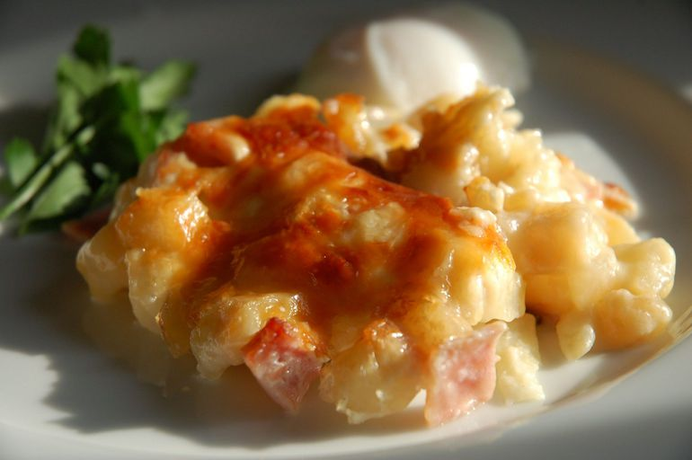

Cheesy Ham and Hash Brown Casserole

A quick and easy ham and hash brown casserole
Ingredients
- 32 oz frozen hash brown potatoes
- 21 oz condensed cream of potato soup
- 16 oz sour cream
- 2 cups sharp cheddar cheese
- 8 oz cooked, diced ham
- 1.5 cups grated Parmesan cheese
- cooking spray
Steps
- Preheat the oven to 375 degrees F (190 degrees C). Lightly grease a 9x13-inch baking dish with cooking spray.
- Mix together hash browns, condensed soup, sour cream, Cheddar cheese, and ham in a bowl until well combined. Spread evenly into the prepared dish. Sprinkle with Parmesan cheese.
- Bake in the preheated oven until bubbly and lightly brown, about 1 hour.